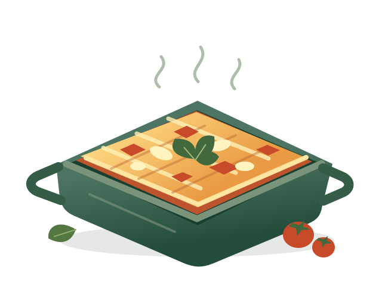

Kies iets lekkers
Bekijk het recept en lees eerst alle stappen even door.
● VOOR GROTE EN KLEINE TREK
Een beetje roeren. Een beetje proeven.
En iets heel lekkers op tafel zetten.
Met deze recepten kun jij het zelf!
Simpele recepten. Duidelijke stappen. Veel kookplezier.

JE EIGEN RECEPTENBOEK
UIT DE OVEN · LEKKER VEEL KAAS
Laagje saus, laagje pasta, laagje kaas.
Een hele schaal vol zelfgemaakt geluk.
Een klein begin, een heerlijk recept. Dit kookboek groeit met ons mee.
SCHORT OM, HANDEN WASSEN
Bekijk het recept en lees eerst alle stappen even door.
Verzamel je ingrediënten en keukenspullen. Vink af wat je hebt.
Zet de kookstand aan en volg de stappen op jouw tempo.
JOUW EERSTE OVENGERECHT
Voor een 12-jarige · 15 minuten voorbereiden · 35 minuten oven
Eet smakelijk, chef! ✦